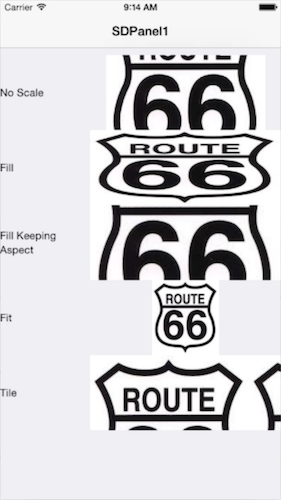
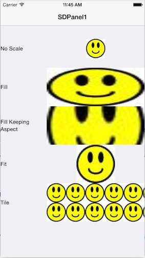

Allows to specify how an image is shown, depending on the size of the image and the size of the control where the image is used. This property of the Theme Image class, helps to avoid the distortion of the image.
| No Scale | Respects the original size of the image, independently of the area control size. |
| Tile | The image is not scaled. It is repeated horizontally and vertically to fill the control size. |
| Fill | The image is scaled in width and height to fill the whole size of the control area. |
| Fill Keeping Aspect Ratio | The image makes bigger or smaller in width and height to fill the entire size of the control area, but keeping the aspect of the image. For example, if the image size is 100x200, and the control size is 50 x 50, then the image size is converted to 50 x 100. |
| Fit | The image scales in width and height to see it at all, and keeping the aspect of the image. For example, if the image is 100x200, and the control is 50 x 50, then the image is converted to 25 x 50. This is the default value. |
Usually, we have to put an image in a specific area on the layout, and we want to see this image without distortion. The problem is when the image size and the area size are not the same (the most common scenario). For example, we have a photo with size 1000 x 800 and we have to use it in an area of 200x150. And obviously, with this, there is an aspect ratio difference. What we want to do is resize the original image without distortion, which in this case would produce a 200 x 150, and keeping the aspect of the photo. In this case, we should use the default Value: scaleToFitkeepingAspect. Content modes are used to resize the contents (image in this case) of your area view.
We have the following image, which size is 500 x 559:
And it is used within a table cell that is smaller than the image. Let's see how it is shown, using the different values of the Content Mode Property.

We have this image, which size is 50x50.
And it is used it within a table cell; that is bigger than the image. Let's see how it is shown, using the different values of the Content Mode Property.
.
Objects: Theme for Smart Devices
Controls: Image
Platforms: SmartDevices(iOS, Android)
| Backlinks | |||
| Grid theme-class for Smart Devices | |||
| Category:Image object | Image theme-class | Toc:Native Mobile Applications Development | Pin Image Scale Type property |
| Scroll Attachment property |